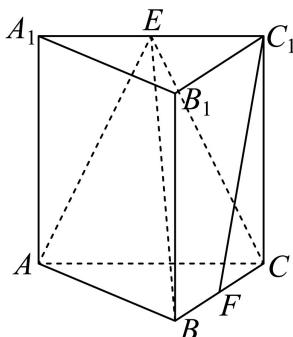

填空题
按本区原卷题号顺序排列。
崇明 · 第1题 ★☆☆☆☆ · 教师预估
已知集合 A={1,2,3,4,5} B={x∣x>5} ，则 A∩B=
崇明 · 第2题 ★☆☆☆☆ · 教师预估
不等式 2x+1x−1< 0的解为
崇明 · 第3题 ★☆☆☆☆ · 教师预估
若复数z满足2z + z¯ = 1 + i其中i为虚数单位，则z = .
崇明 · 第4题 ★☆☆☆☆ · 教师预估
(x − 1)7的二项展开式中x3的系数为
崇明 · 第5题 ★☆☆☆☆ · 教师预估
双曲线 x2−4y2=1 的渐近线方程是
崇明 · 第6题 ★☆☆☆☆ · 教师预估
已知x,y为正实数，且满足 4x+y=40 ，则x⋅y的最大值是
崇明 · 第7题 ★☆☆☆☆ · 教师预估
已知 ∣a=(1,2),b=(2,k) ，如果 a//b ，那么实数k的值为
崇明 · 第8题 ★★☆☆☆ · 教师预估
已知 f(x)={2x−1,x>1x−1,x≤1 ，关于x的方程f(x) = 2的解x =
崇明 · 第9题 ★☆☆☆☆ · 教师预估
在空间直角坐标系中，点(1,2,3)关 FxOy 平面的对称点的坐标是
崇明 · 第10题 ★★☆☆☆ · 教师预估
某校四个植树小队，在植树节这天种下柏树的棵数分别为10,x,10,8，若这组数据的中位数和平均数相等，那么x =
崇明 · 第11题 ★★★☆☆ · 教师预估
本题资料或解析有待核事项，预览不可作为已审定成品。
已知 f(x)=Asin(ωx+6π)（A>0,ω>0），若函数 y=f(x) 在区间 [0,2π] 上有且仅有3个零点和1个极小值点，则 ω 的取值范围是______。
崇明 · 第12题 ★★★☆☆ · 教师预估
本题资料或解析有待核事项，预览不可作为已审定成品。
已知函数 ⋅y=f(x) 的定义域 D={1,2,3,4} ，值域 A={5,6,7} ，则函数 ⋅y=f(x) 为增函数的概率是
选择题
按本区原卷题号顺序排列。
崇明 · 第13题 ★★☆☆☆ · 教师预估
本题资料或解析有待核事项，预览不可作为已审定成品。
下列函数中，在其定义域上既是奇函数又是严格增函数的是（ ）。
A. y=x3
B. y=ex
C. y=lgx
D. y=sinx
崇明 · 第14题 ★★☆☆☆ · 教师预估
已知直线l和平面α，则“l垂直于α内的两条直线”是“l⊥α”的（ ）
A. 充分非必要条件
B. 必要非充分条件
C. 充要条件
D. 非充分非必要条件
崇明 · 第15题 ★★☆☆☆ · 教师预估
本题资料或解析有待核事项，预览不可作为已审定成品。
抛掷一红一绿两颗质地均匀的骰子，记录骰子朝上面的点数，若用x表示红色骰子的点数，用y表示绿色骰子的点数，用 (x,y) 表示一次试验结果，设事件 E:x+y=8 ；事件F：至少有一颗点数为6；事件 G:x>4 ；事件 H:y≤4 .则下列说法正确的是（ ）
A. 事件E与事件F为互斥事件
B. 事件F与事件G为互斥事件
C. 事件E与事件G相互独立
D. 事件G与事件H相互独立
崇明 · 第16题 ★★★★☆ · 教师预估
本题资料或解析有待核事项，预览不可作为已审定成品。
已知数列 {an} ，若存在数列 {bn} 满足对任意正整数n，都有 (an−bn)(an+1−bn+1)<0 ，则称数列{bn} 是 {an} 的交错数列.有下列两个命题：①对任意给定的等差数列 {an} ，不存在等差数列 {bn} ，使得 {bn} 是 {an} 的交错数列；②对任意给定的等比数列 {an} ，都存在等比数列 {bn} ，使得 {bn} 是 {an} 的交错数列.下列结论正确的是（ ）
A. ①与②都是真命题；
B. ①为真命题，②为假命题；
C. ①为假命题，②为真命题；
D. 1◯ dz dH ②都是假命题
解答题
按本区原卷题号顺序排列。
崇明 · 第17题 ★★★☆☆ · 教师预估
本题资料或解析有待核事项，预览不可作为已审定成品。
如图，在直三棱柱 ABC−A1B1C1 中，E、F分别为 A1C1 、BC的中点， AA1=AB=BC=2 C1F⊥AB.

(1) (6分)求证： C1F// 平面ABE；
(2) (8分)求点C到平面ABE的距离.
崇明 · 第18题 ★★★☆☆ · 教师预估
在 △ABC′ 中，已知点D是BC边上一点，且BD = 1，CD = 3.
(1) (6分)若 AD⊥BC ，且 ∠ABD=2∠ACD ，求AD的长；
(2) (8分)若 ∠ABD=55∘,∠ACD=32∘ ，求AD的长（结果精确到0.01）.
崇明 · 第19题 ★★★☆☆ · 教师预估
王老师将全班40名学生的高一数学期中考试（满分100分）成绩分成5组，绘制成如图所示的频率分布直方图，现将[50, 60)记作第一组，[60, 70)、[70, 80)、[80, 90)、[90, 100]分别记作第二、三、四、五组．已知第一组、第二组的频率之和为0.3，第一组和第五组的频率相同

(1) (4分)估计此次考试成绩的平均值（同一组数据用该组数据的中点值代替）；
(2) (5分)王老师将测试成绩在[80, 90)和[90, 100]内的试卷进行分析，再从中选2人的试卷进行优秀答卷展示，求被选中进行优秀答卷展示的这2人的测试成绩至少1个在[90,100]内的概率；
(3) (5分)已知第二组考生成绩的平均数和方差分别为65和40，第四组考生成绩的平均数和方差分别为83和70，据此计算第二组和第四组所有学生成绩的方差
崇明 · 第20题 ★★★★☆ · 教师预估
本题资料或解析有待核事项，预览不可作为已审定成品。
已知椭圆Γ: 4y2+3x2=1 ，点 F1 、 F2 分别是椭圆的下焦点和上焦点，过点 F2 的直线l与椭圆交于A、B两点
(1) (4分)若直线l平行于x轴，求线段AB的长；
(2) (6分)若点A在y轴左侧，且− F1A⋅F2A=49 ，求直线l的方程；
(3) (8分)已知椭圆上的点C满足 ∣CA∣=∣CB∣ ，是否存在直线l使得△ABC的重心在x轴上？若存在，请求出直线l的方程，若不存在，请说明理由
崇明 · 第21题 ★★★★★ · 教师预估
本题资料或解析有待核事项，预览不可作为已审定成品。
定义：若曲线 C1 和曲线 C2 有公共点P，且曲线 C1 在点P处的切线与曲线 C2 在点P处的切线重合，则 称 C1 与 C2 在点P处“一线切”.
(1) (4分)已知圆 (x−a)2+y2=r2(r>0)H 与曲线 y=x2 在点(1,1)处“一线切”，求实数a的值；
(2) (6分)设 f(x)=x2+2x+a,g(x)=ln(x+1) ，若曲线 y=f(x)⊥ 与曲线 y=g(x) 在点P处“一线切”，求实数a的值；
(3) (8分)定义在R上的函数 y=f(x) 的图象为连续曲线，函数 y=f(x) 的导函数为 ∣y=f′(x) ，对任意的 ∣x∈R ，都有 {∣f′(x)∣≥∣f(x)∣f(x)∣<2 成立.是否存在点P使得曲线 y˙=f(x)sinx 和曲线 ;y=1 在点P处“一线切”？若存在，请求出点P的坐标，若不存在，请说明理由.